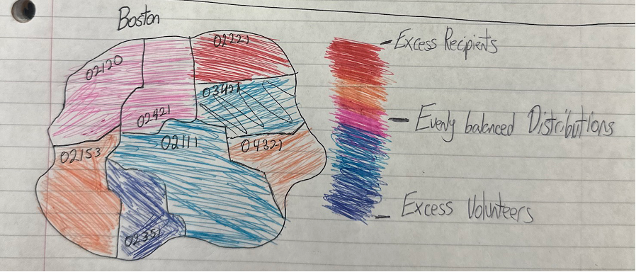
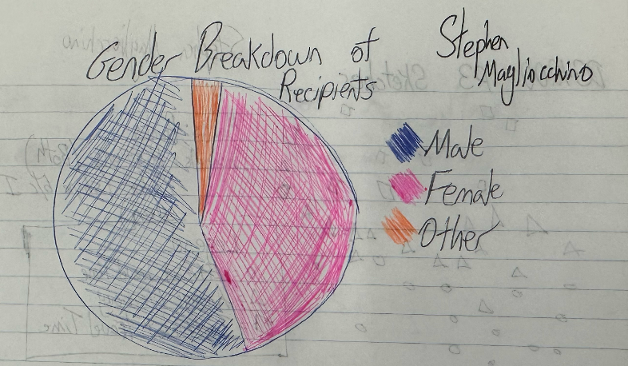
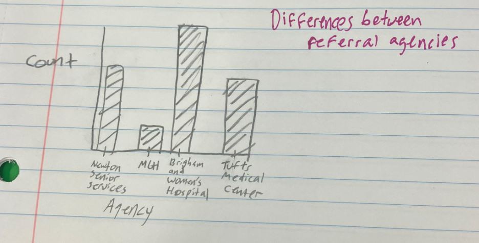
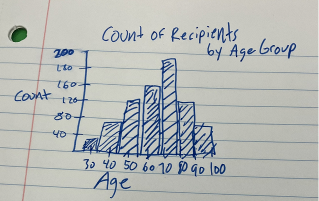

Image Name: FriendshipWork Logo
Our project involves the non-profit company FriendshipWorks, who work to match older adults to volunteers to make a lasting connection and lower rates of isolation. FriendshipWorks has multiple programs, but two they focus on are medical escort and friendly visiting. Medical Escort focuses on volunteers assisting older adults on their way to medical appointments, which can be a massive help as many adults don’t end up going to their doctor’s visits on their own. Their biggest program, Friendly Visiting, involves matching volunteers to older adults and spending time together approximately once a week. Building these connections are incredibly important for older adults, and some of the connections have lasted up to 40 years. Our purpose is to find the overlap between the elderly and the volunteers that work with Friendship Works. Finding overlaps in interests or backgrounds might lead to more compatibility between the two and higher satisfaction from taking part in Friendship Works.
As for the data that FriendshipWork provided, we use the data below to create the visualization. In addition to the data provided, we are using columns from census data as well.
| Mailing City/State | Type |
|---|---|
| Zip Code | Categorical |
| Program Participation | Categorical |
| 1st Preferred Program | Categorical |
| Referral Agency | Categorical |
| Additional Referral Info | Categorical |
| Friendly Visit Tracking Name | Categorical (ID Numbers that do not seem to be ordered) |
| Length of Match (Months) | Quantitative |
| Neighborhood | Categorical |
| Population over 60 | Quantitative |
| % of Population over 60 | Quantitative |
Neighborhoods of Greater Boston, Prove impact, Where do we have an imbalance, Funding, Volunteers, Identify hospital systems and health systems, Referrals, References, Isolation, Connections, Friendship and support.
The visualizations we are making are mainly for the organization members and volunteers to help them figure out what imbalances there are in their system. Based on the data they have, the organization wants to figure out if there are any major differences in the clusters between volunteers and older adults. We will be using zip code data to figure this out, and the type of consumption will be discovered and presented. After making these visualizations, the organization could use this to present in order to receive funding.
| Index (ID#) | “Domain” Task | Analytic Task (Low-level, “Query”) | Search Task (Mid-level) | Analyze Task (High-level) |
|---|---|---|---|---|
| 1 | Measure and compare distances/travel times between volunteers and older adults | Retrieve Value/Characterize Distribution | Browse | Present |
| 2 | What are the results of the grant-funded projects | Filter | Explore | Present |
| 3 | Find imbalances between number of volunteers and recipients in a given zip code | Retrieve Value/Characterize Distribution | Browse | Present |
The data provided describes the geographic distribution of all volunteers and recipients that have partnered with FriendshipWorks. We have access to the zip code, their neighborhood, county, and state that they reside in. There is also another file containing the length in months that a partner and recipient have been matched for.
When doing the original data cleaning, there were different obstacles we had to encounter, especially with the location data. The data was gathered through surveys, so in the responses there are many different answers that all mean the same thing, which made it confusing to organize. For example, when asked about the state of residence, some answers were given as Mass, Massachusetts and MA, which come up differently in a graph but all are the same state.
The particular subsets we have chosen include zip code and program preference data for both volunteers and recipients. We chose these data points because we would be able to identify imbalances in the numbers of volunteers and recipients for each zip code, and show the organization where they would shift their focus.
In the first stage, each member of our group drew three sketches that we thought might be helpful. Below are what sketches we have:
This visualization is useful because it demonstrates examples of travel time from volunteers to their recipients. It would display both their absolute distance and travel time (the x and y axes) and also group them into three separate ranges of “efficiency” based on expected travel times and lines of best fit. One potential hurdle I see with this visualization is finding consistent ways to collect travel time calculations because different volunteers would use different modes of transportation (car, bus, bike, walking, the T, etc.). The marks are points, and the channels are position along both scales and color of each point. This visualization would be used to try to find volunteers who were traveling more than 20 minutes because they find that 20 minutes is an upper bound for volunteers, and anyone who has to travel more than that typically doesn’t last very long in the program.
This visualization is my favorite of the three I have created. It colors each postal code within Greater Boston using the scale seen on the right. Depending on the color of the area, that postal code would either have an imbalance of recipients or volunteers. This visualization is useful because it shows where/what type of person Friendship Works would have to recruit to fix these imbalances. We expect to see that there are more total people enlisted closer to Central Boston and for there to generally be more recipients than volunteers based on early exploration of the data. The mark is area, and the channels are color and position. This helps us accomplish the task of exploring imbalances between volunteers and recipients within the zip codes of Greater Boston.
This visualization would be useful because it would illustrate the gender breakdown of recipients or volunteers. It would be a good way to quickly understand how the demographics of these two groups differ, and how future recruiting could be changed to balance these ratios out. For the “other” category, we could expand it into different subgroups based on the thoroughness of the data provided by Friendship Works, if possible. The mark is area and the channels are Color and Tilt. It doesn’t really address a task in the table, but we didn’t have information for us to assess the year-to-year growth or funding figures, so this was all I could think of.
The first graph I chose was a map view of the Boston area, with the dots showing the difference between the Medical Escort program and Friendly Visiting. The mark for the graph is area, while the channel is position and color. This graph could show the imbalances between the two programs.
The second graph is a bar chart showing different referral agencies for FriendshipWorks. The mark is a line, while the channels are position and size. The count of referrals could show which agencies have better connections with friendship works and which ones could be used more.
The third graph is a binned bar chart showing the counts of ages. The mark is a line, while the channels are position and size. This graph can show which ages utilize the programs the most and where they could target their reach in the future. One part of the email they sent us regarded the age of the recipients and what insights they could gain from that data.
Then, as for the previous 9 sketches, our 3 favorite sketches are as follows:
We believe these are our 3 best sketches as they showcase the most about the data. The map with postal codes and a diverging gradient indicate where there are imbalances between recipients and volunteers, which is a main factor requested by FriendshipWorks. The line graph about funding is one that could be utilized well by FriendshipWorks when asking for different grants, as they are able to give a justification for their funding over the years. Finally, a scatter plot between distance and travel time is important for the matches. In our meeting with the organization, FriendshipWorks explained that matches have better success if there is a shorter travel time between the recipient and the volunteer.
Overall, to help FriendshipWorks, we analyzed their data to uncover these trends and insights. We identified imbalances in volunteer to recipient ratios and identified areas with potential for growth. In addition, we explored the use of travel time as a measure of volunteer-recipient matching, which showed promise in creating more lasting matches. The next step in our project is to begin sketching designs for interactive web-based visualization. This will help present our findings in a way that is easy to understand and visually appealing. Our goal is to create a tool that will enable Friendship Place to make informed decisions about its programs and help them better serve older adults in the community. We look forward to continuing to work on this project and helping to make a positive impact through our data analysis and visualization efforts.
First Visualization
Our first visualization is one which compares volunteer/recipient data to each area. Each volunteer is matched with a zip code as provided in the survey data, and we attempted to manually map each neighborhood to a zip code, and plot the two together. This graph still is in progress as there is a lot more data but it's not yet connected with each neighborhood.
Second Visualization
This visualization is interactive and links each neighborhood of Boston from a bar graph to a map. One goal FriendshipWorks had for us was to look at different census data and target where more older adults would be located, as that is their main users. We took data from the census for this visualization, as they had a column of population 60 and older. The visualization shows each neighborhood and the population over 60, and the map shows the same but color coded where dark blue has the highest population and the lighter green is the lowest population.